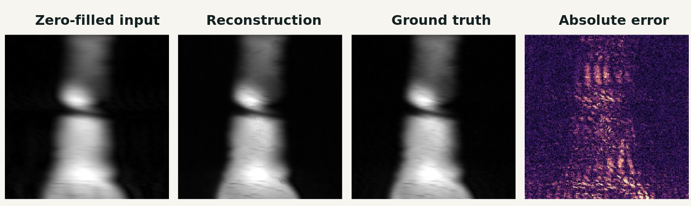

01
Machine Learning · Medical Imaging
Medical Image Reconstruction
Developed a data-consistent cascade U-Net workflow for reconstructing 8x undersampled single-coil knee MRI from the fastMRI dataset. The model iteratively refines zero-filled inputs while preserving measured k-space values.
What the evaluation showedThe best illustrated slice achieved SSIM 0.9533, PSNR 39.97 dB, and NMSE 0.0011. The broader evaluation also included error maps and hard-case analysis rather than relying on one aggregate score.
- PyTorch
- Cascade U-Net
- fastMRI
- SSIM
